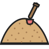

Ducklings · Reading
Say it three times
Ducklings · 170
Name
Date
Time
For grown-ups:
Point to the picture and ask a question the sentence answers. Then say the sentence together and color a circle.
I eat
peas
.

I see some
sand
.
The
oven
is
hot
.